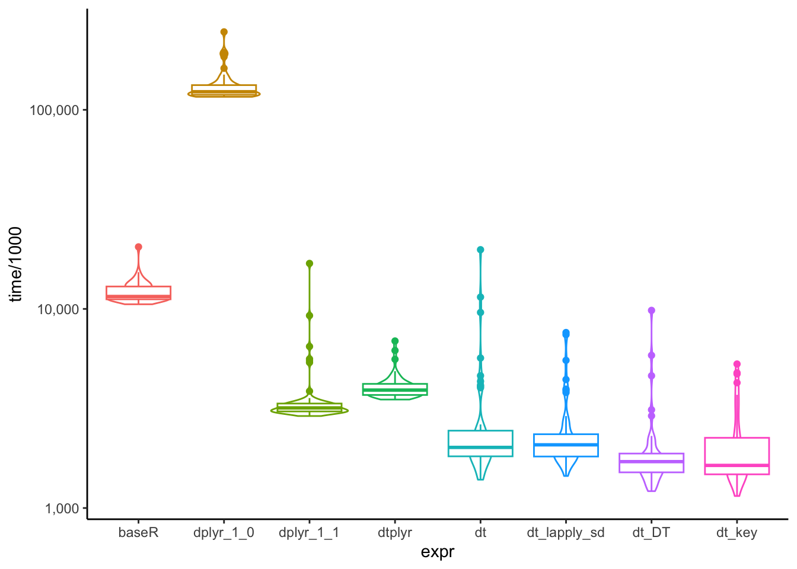

baseR = aggregate(diamonds[,c("price", "depth","carat")],
by = list(diamonds$color, diamonds$cut),
FUN = mean)데이터프레임 성능 비교하기
base R 함수들을 공부하다 aggregate()를 알게 되었습니다. 그러다 문득, 이 기본 함수가 다른 패키지들의 그룹 함수와 얼마나 성능 차이가 나는지 궁금해졌습니다.
그래서 단순하면서도 가장 많이 활용되는 그룹 별 데이터 요약하기 성능 테스트를 진행해보았습니다.
실험에 사용된 데이터는 ggplot2의 diamonds 데이터입니다.
성능 비교를 위해 사용된 방법들은 다음과 같습니다.
base Rdplyr 1.0dplyr 1.1dtplyrdata.tabledata.table1.14.9 (dev)
1. base R
외부 패키지 없이 그룹 별로 요약값을 계산하려면 aggregate()을 사용해야 합니다.
2. dplyr
가장 많은 R 사용자들이 활용할 것으로 예상되는 dplyr의 방법입니다. dplyr의 경우, 최근에 업데이트된 1.1 버전과 1.0 버전을 가지고 비교를 해보았습니다.
1) dplyr 1.0
dplyr에서 group_by() 와 summarise()를 통해 분석을 그룹 별 요약 값을 계산하는 방법입니다.
diamonds |>
group_by(color, cut) |>
summarise(across(c(price, depth, carat), mean, na.rm=T)) |>
ungroup()2) dplyr 1.1
dplyr 버전 1.1에서부터는 group_by()를 따로 사용하지 않더라도, 각각의 함수에서 .by 인자를 통해 그룹 변수를 지정해줄 수 있게 되었습니다.
diamonds |>
summarise(across(c(price, depth, carat), mean),
.by=c(color, cut))3. dtplyr
dtplyr는 dplyr의 코드와 data.table의 backend를 합쳐놓은 패키지입니다. dplyr와 같은 코드를 활용해 data.table과 같이 빠른 성능을 낼 수 있는 패키지입니다.
Warning
비록 dtplyr가 data.table처럼 빠른 성능을 보여줄 수 있다고는 하나, 순수한 data.table보다는 성능이 떨어지는 것으로 알려져 있습니다. 그 이유는 dplyr의 코드를 data.table 문법으로 변경하는 과정에서 걸리는 시간 때문입니다.1
dtplyr에서는 lazy_dt()를 이용해 데이터를 dtplyr 클래스로 만들어줍니다.
lazy_dt(diamonds) |>
summarise(across(c(price, depth, carat), mean))4. data.table
속도로 잘 알려진 data.table 입니다.
data.table 같은 경우, 총 4개의 버전으로 비교해보았습니다.
1) j, by만 이용
as.data.table(diamonds)[,.(mean_price = mean(price),
mean_depth = mean(depth),
mean_carat = mean(carat)),
by=.(color, cut)]2) lapply + .SD 이용
lapply + .SD 문법을 이용하여 계산하고자 하는 변수들을 동시에 입력해줍니다.
as.data.table(diamonds)[,lapply(.SD, mean),.SDcols=c("price","depth","carat"), by=.(color, cut)]3) lapply + .SD + keyby
data.table의 장점 중 하나는 key를 설정해 데이터를 정렬할 수 있다는 것이죠. 마찬가지로 keyby를 이용해 그룹 변수를 key로 만들어줌으로써, 그룹 변수를 기준으로 데이터를 정렬합니다.
as.data.table(diamonds)[,lapply(.SD, mean),.SDcols=c("price","depth","carat"), keyby=.(color, cut)]4) data.table 개발 버전 (1.14.9)
현재 github에 공개되어있는 1.14.9 버전에서는 data.table 클래스가 아닌 데이터셋도 DT()를 이용해 data.table 문법을 적용할 수 있습니다.
diamonds |> DT(,.(mean_price = mean(price),
mean_depth = mean(depth),
mean_carat = mean(carat)),
by=.(color, cut))이제, microbenchmark 패키지를 이용해 성능 비교를 진행한 뒤, 이를 boxplot으로 그려 시각화를 해보겠습니다.
set.seed(123)
result <- microbenchmark(
baseR = aggregate(diamonds[,c("price", "depth","carat")],
by = list(diamonds$color, diamonds$cut),
FUN = mean),
dplyr_1_0= diamonds |>
group_by(color, cut) |>
summarise(across(c(price, depth, carat), mean, na.rm=T)) |>
ungroup(),
dplyr_1_1 = diamonds |>
summarise(across(c(price, depth, carat), mean),
.by=c(color, cut)),
dtplyr = lazy_dt(diamonds) |>
summarise(across(c(price, depth, carat), mean),
.by=c(color, cut)),
dt = as.data.table(diamonds)[,.(mean_price = mean(price),
mean_depth = mean(depth),
mean_carat = mean(carat)),
by=.(color, cut)],
dt_lapply_sd = as.data.table(diamonds)[,lapply(.SD, mean),.SDcols=c("price","depth","carat"), by=.(color, cut)],
dt_DT = diamonds |> DT(,.(mean_price = mean(price),
mean_depth = mean(depth),
mean_carat = mean(carat)),
by=.(color, cut)),
dt_key = as.data.table(diamonds)[,.(mean_price = mean(price),
mean_depth = mean(depth),
mean_carat = mean(carat)),
keyby=.(color, cut)],
times=50
)Unit: milliseconds
expr min lq mean median uq max
baseR 10.552662 11.173197 12.164903 11.546440 12.962560 20.493071
dplyr_1_0 116.217042 118.796475 132.369553 123.273039 133.731381 246.319923
dplyr_1_1 2.897798 3.051425 3.747189 3.183015 3.350643 16.925046
dtplyr 3.506443 3.692419 4.080181 3.911830 4.210495 6.900628
dt 1.388014 1.813020 2.963913 2.015950 2.462214 19.836948
dt_lapply_sd 1.448530 1.809535 2.476250 2.076978 2.352867 7.611691
dt_DT 1.215199 1.509661 2.024631 1.710049 1.893708 9.833071
dt_key 1.148820 1.475221 2.090865 1.636802 2.269391 5.287114
neval
50
50
50
50
50
50
50
50
예상된 결과였지만, 역시 data.table을 사용한 방법이 가장 빠른 것으로 나타났습니다.
재미있는 점은 dplyr 1.0의 group_by()가 생각보다 느리다는 것이었습니다. 심지어 base R의 aggregate()보다 느린 것으로 나타났습니다.
확실히 데이터가 커지면 커질수록 data.table이 속도 측면에서 큰 우위를 가져가는 것 같습니다.
Footnotes
https://dtplyr.tidyverse.org↩︎